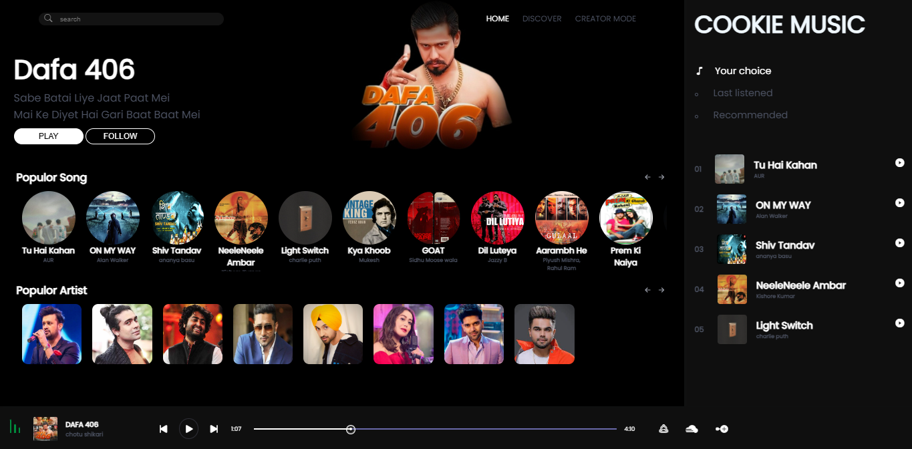
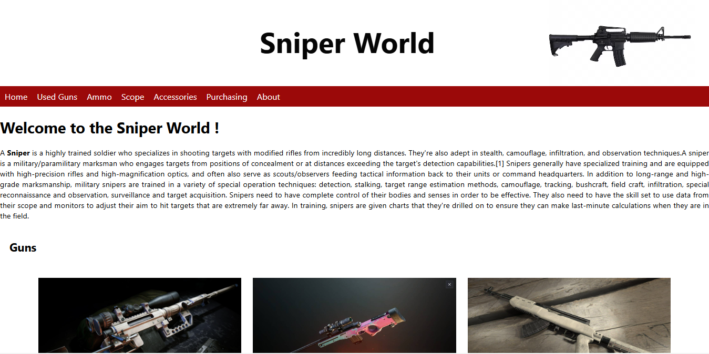

1.Cookie Music🎜
This project was a key component of our Mini Project, which focused on developing a music streaming web application. Our goal was to create a user-friendly platform that seamlessly integrates with various music libraries, allowing users to easily browse, stream, and manage their favorite tracks. We designed the interface with intuitive navigation in mind and incorporated features like personalized playlists, real-time recommendations, and high-quality audio streaming. By leveraging modern web technologies and adhering to best practices in user experience design, we aimed to deliver a robust and enjoyable musical experience for all users.

2.Weapons store🔫
It is basically a weapons store, your premier destination for high-quality firearms and accessories. At Weapons Store, we take pride in offering a wide range of guns to meet the needs of enthusiasts and professionals alike. Whether you're looking for precision rifles, reliable handguns, or tactical shotguns, our expert staff is here to help you find the perfect match. Our commitment to safety, legality, and customer satisfaction ensures that every purchase is handled with the utmost care and professionalism. Explore our diverse selection and experience the confidence that comes with owning top-notch firearms from Weapons Store.